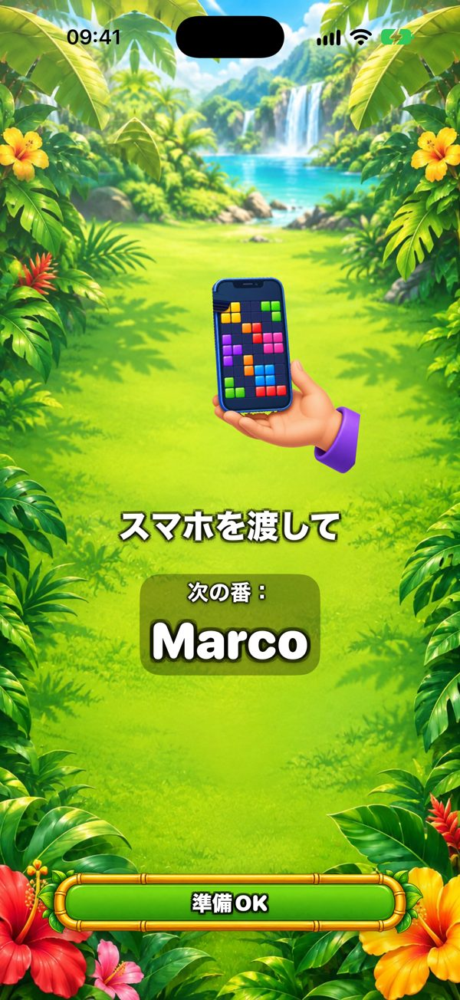
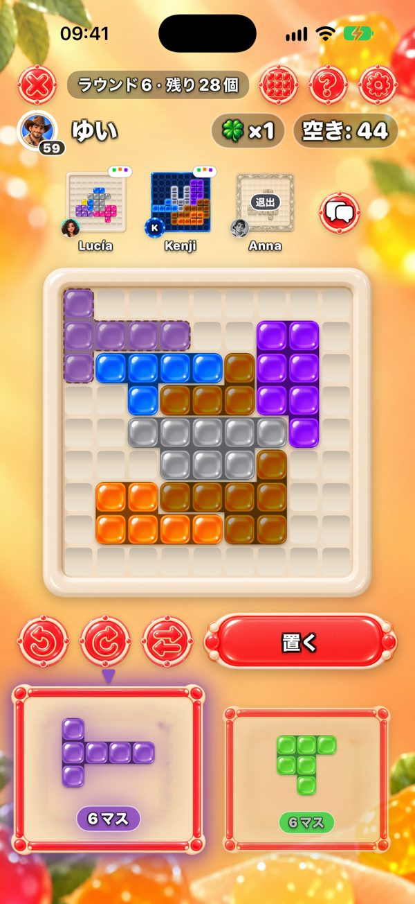
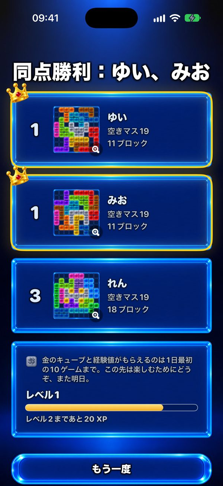

1台のスマホでみんなで遊べるゲーム
1台のスマホで家族みんなで遊べるゲームを探していますか？ One More Chance は順番に回して遊ぶパズルです。みんなが同じブロックで自分の9×9の盤面を埋め、空きマスがいちばん少ない人の勝ち。


1台のスマホでどう遊ぶの？
まず全員がランダムな最初のブロックを、盤面の中央にかかるように置きます。その後は毎ラウンド2つのブロックが出ます。最初の人が1つ選んで自分の盤面の好きな場所に置き（回転・反転OK）、スマホを次の人に渡します。「スマホを渡して」画面で次が誰の番かわかります。全員が同じ2つのブロックを受け取るので公平。違うのは盤面の育ち方だけです。

何人で遊べる？
2人までは無料。Premium（買い切り、サブスクなし）なら1台のスマホやiPadで最大6人まで遊べます。大人数なら、テーブルにiPadを置くのがおすすめです。
それぞれ自分のスマホでも遊べる？
はい。近くのスマホ同士がBluetoothとWi‑Fiでつながり（ネット不要）、全員が同時にプレイ。画面の上には他の人の盤面が見えます。3人以上で遊ぶときにPremiumが必要なのは、ゲームを作る人だけです。

勝ち負けは？
空きマスがいちばん少ない人の勝ち。どちらのブロックも置けないときは「もう一度チャンス」で、自分だけの追加ブロックがもらえます。すべて埋まった完璧な盤面が最高の目標です。

1ゲームの長さは？
1ゲームは最大20ラウンド。1人なら数分。みんなで遊ぶときは、1手＝ブロック1つなので、それぞれがどれだけ考えるか次第です。Premiumなら1手を30・60・90秒に制限できます。
何歳から遊べる？
App Storeでは、任意のフレンドとのチャットと広告があるため13+に指定されています。ゲーム自体はカラフルなブロックを盤面に置くだけ。暴力表現はなく、タイマーを使わなければ急かされず、ブロックを置くのに文字を読む必要もありません。小さなお子さんは大人と一緒に遊べます。
無料？ 広告はある？
ゲームは無料です。広告が出るのは1人プレイの合間だけ。友だちとのゲームでは、1台でも複数台でも広告は出ません。Premiumで広告がなくなり、テーマが6つ増え、最大6人で遊べます。
インターネットは必要？
いいえ。1台のスマホでも、近くの複数の端末でも、オフラインで遊べます。ネットが必要なのはオンライン対戦、フレンド、デイリーチャレンジの順位だけです。